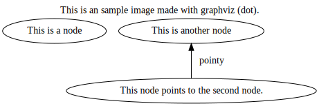

So today I've set up some basics to quite easily manage my github page through vimwiki.
Simple fix, added the following line in my .vimrc:
let g:vimwiki_list = [{'path': '~/vimwiki/', 'path_html': '~/vimwiki_html/'}, {'path': '~/workspace/fonfalleh.github.io/wiki/', 'path_html': '~/workspace/fonfalleh.github.io/'}]
So it's like a list of indices of vimwiki, the first one being the default install that I use for other notekeeping.
path being the actual location of the .wiki files that I write in, and path_html being where the resulting HTML files are generated.
With this setup, I can enter my second vimwiki index (this one), write a new page, run :Vimwiki2AllHTML, and the changes will be visible at https://fonfalleh.github.io when the changes are pushed.
Not that it was entirely necessary, but I also created a bash script for generating the html-files from "outside" of vim (it still launches vim, but you don't need to be IN vim when running it). I'm probably always going to generate the files from within vim anyway.
I also created a script for generating and placing all graphviz graphs (under src/graphviz) in the repo as .svg files in the images/ dir, so that I can access them from ../images, like this: {{local:../../images/sample.svg}}
EDIT: So, apparently, even though it Worked on my machine™ the relative paths don't translate the way I hoped in this manner. Perhaps I'll just generate the images where they are to be used... We'll see.
EDIT2: local: works fine, I was using file:.
Which will result in the following:

Wow, technology.
Perhaps there's a way for pointing to files without having a relative path going up x steps first (two here, since this file is in wiki/diary).
I also learned a little about Shell Parameter Expansion 1, 2 in order to strip part of the path and file extension of the .gv files.
So basically, if it weren't for the fact that the html files and images need to be on this repo in order to be viewed as a github page, they could be generated from the two scripts generate_html.sh and generate_images.sh in this repo's root, and the resulting pages wouldn't need to be kept in the repo. Potentially, for another page that don't need the html committed, one could just keep the wiki files and source for the images and generate things when "deploying".
...
So, uh, that's fun!